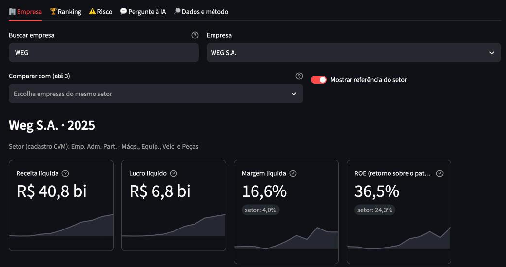
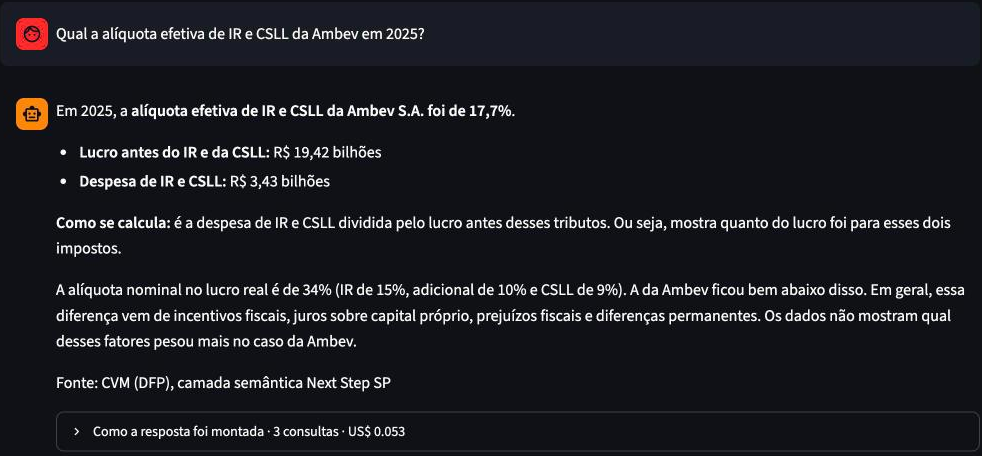
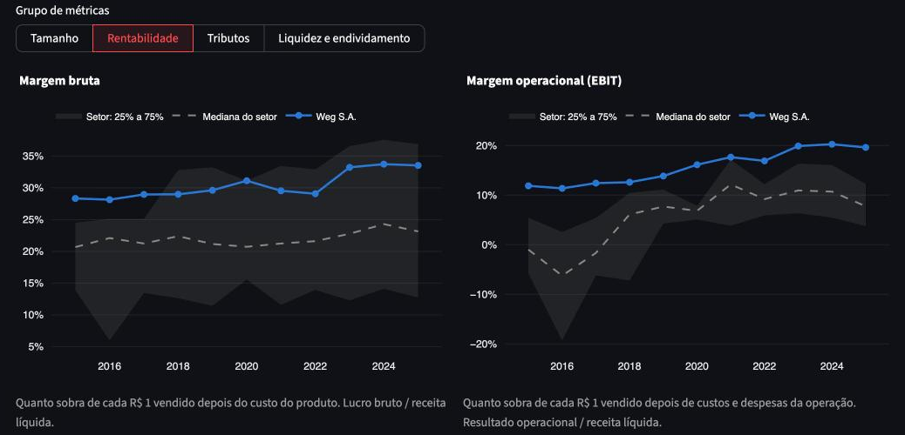
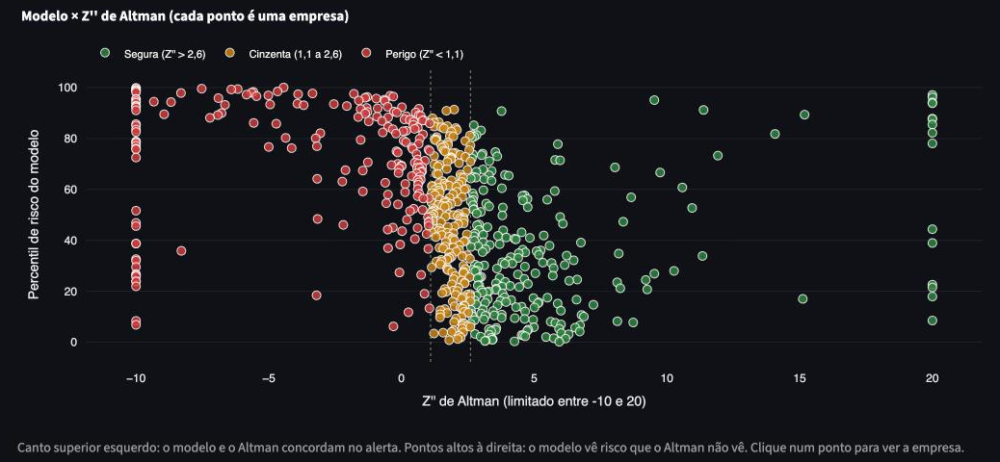

Do arquivo bruto da CVM a respostas em português, com cada número conferido e rastreável até a linha original.


A regra básica da contabilidade diz que os dois lados precisam ser iguais. Um teste automático pegou a diferença: o total foi publicado sem o patrimônio líquido.
A prova veio da própria empresa: no balanço do ano seguinte, ela repete 2021 com o total certo. Registrei como exceção, com a evidência, e o teste segue vigiando todas as outras.
Itapebi Geração de Energia, balanço de 2021 (CVM, em R$ mil): ativo 699.798 · passivo total publicado 330.123 · patrimônio líquido 369.675.
WEG em 2025: receita de R$ 40,8 bi e margem líquida de 16,6%, contra 4,0% da referência do setor. Cada cartão mostra a evolução desde 2015.

Linha azul: a empresa. Tracejado: a mediana do setor. Faixa cinza: a metade central do setor. Dá para ver em segundos se a empresa está acima ou abaixo dos pares, e desde quando.
A IA não calcula nada. Ela escolhe a consulta, e o número sai de uma regra escrita uma única vez (a camada semântica). Por isso a resposta vem com a conta e a fonte.
PEGADINHAS · O QUE A IA RESPONDEU, RESUMIDO

Risco de recuperação judicial, falência ou liquidação em 24 meses, testado ano a ano sem ver o futuro. O ganho sobre a régua clássica é real, mas modesto: é um alerta para investigar, não um veredito.
Escrever a regra antes de calcular e testar tudo o que eu afirmo. Foi aí que a minha experiência na área fiscal mais ajudou.
Marcelo Santos
Dados: Portal de Dados Abertos da CVM (licença ODbL). Não é recomendação de investimento.